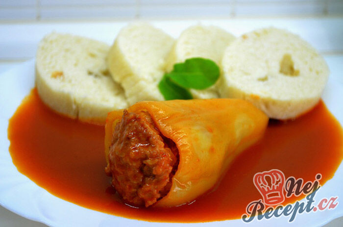

Voňavé papriky plněné mletým masem, zapečené s rajčaty a rajským protlakem. Podávané s knedlíkem, rýží nebo těstovinami.
Mleté maso osolíme a opepříme. Přidáme drobně nakrájenou cibuli, vejce, trochu strouhanky, hořčici, prolisovaný česnek a případně majoránku. Dobře promícháme.
Papriky očistíme, odstraníme semínka a naplníme připravenou směsí. Vložíme je do pekáče, zakapeme olejem, potřeme rajským protlakem a posypeme nakrájenými rajčaty.
Pekáč přikryjeme alobalem a vložíme do trouby předehřáté na 190 °C. Po 20 minutách podlijeme trochou vody a opět přikryjeme.
Po zhruba hodině pečení odstraníme alobal a necháme dopéct dalších 30 minut, aby papriky získaly barvu.
V případě potřeby během pečení ještě podlijeme, nebo přidáme další protlak a rajčata pro vytvoření omáčky.
Hotové papriky podáváme s knedlíkem, rýží nebo těstovinami a přelijeme výpekem.